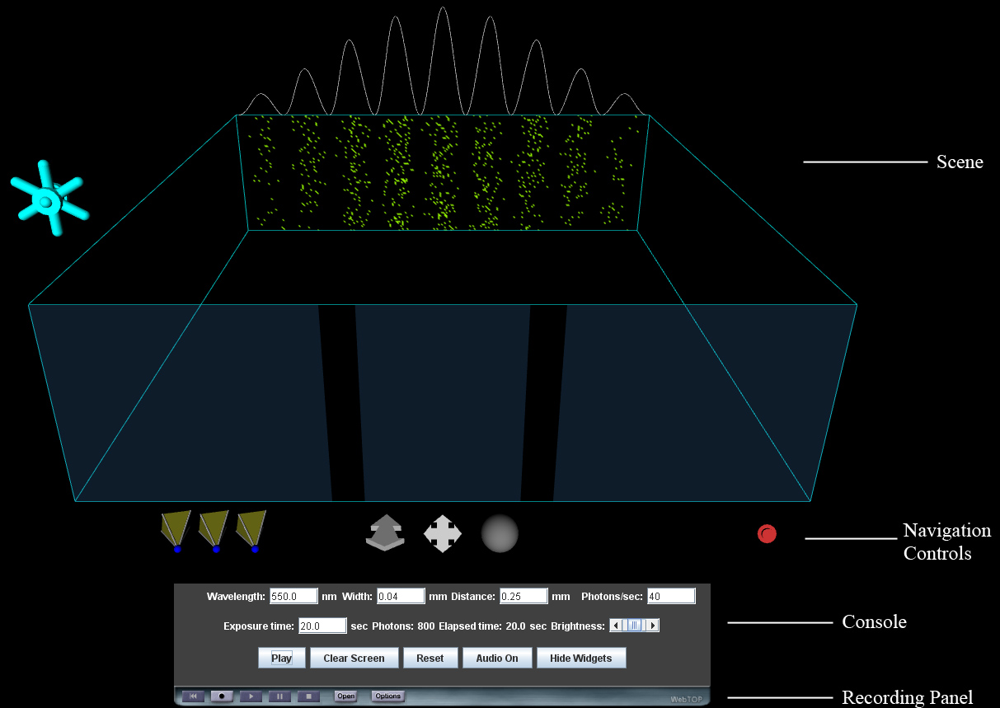

Two-Slit Photon: Directions
The default view for the WebTOP window looks like the following:

The WebTOP window has four parts. The top portion is the WebTOP Scene, which
is the active simulation. The second portion contains the WebTOP Navigation Controls,
which allow you to manipulate the scene. The third portion is the Console, which
allows you to the change parameter values used in the simulation and to control
other features of the simulation. The parameter values can also be changed by
interacting with the widgets in the Scene. The fourth portion is the Recording
Panel, which allows you to record and replay WebTOP sessions. You may scroll
down to read on, or select the appropriate link from the following items:
How To Change Parameters
The parameters that can be changed are: (a) the wavelength of the incident light,
(b) the width of a slit, (c) the distance between the slits, (d) the number of photons
incident on the slits per second, and (e) the amount of time that the “film”
(the observation screen) is exposed..
Changing the Wavelength of the Incident Light
The wavelength can be changed either by typing the desired value into the Wavelength
number box, or by using the cursor to spin the wheel widget that is on the left
hand side of the scene. The allowed range of wavelength values is 400 to 700 nm.
Changing the Slit Width
The slit width can be changed by typing the desired value into the Width number box.
Changing the Slit Separation
The distance between the slits can be changed by typing the desired value into
the Distance number box.
Changing the Photon Rate
The number of photons incident on the slits per second can be changed by
typing the desired value into the Photons/sec number box.
Changing the Exposure Time
The amount of time that the “film” (the observation screen) is exposed can
be changed by typing the desired value into the Exposure Time number box.
Using the Controls
The Play/Pause/Resume button allows the user to play, pause resume the sending
of the photons onto the slits. The Clear Screen button removes all the dots from
the observation screen. The Reset button resets all the parameters to their default
values. The Audio On/Audio Off determines whether the user hears the clicks that correspond
to the arrival of a photon on the screen. The Hide Widgets/Show Widgets button hides
or shows the widgets in the scene.
Back to Top
|